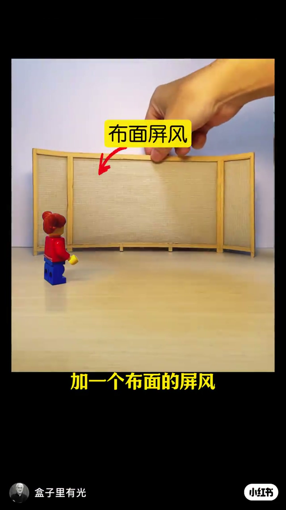
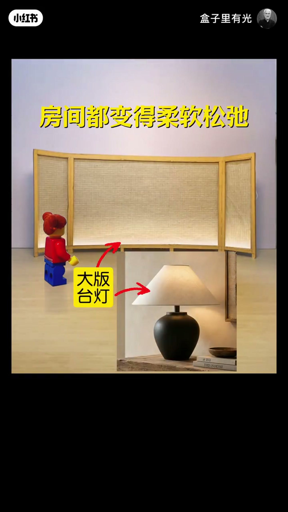
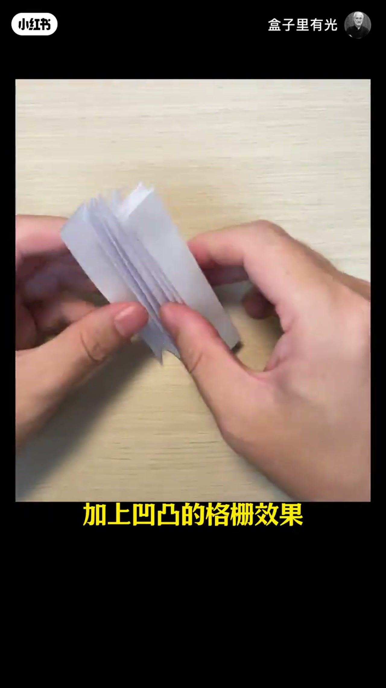
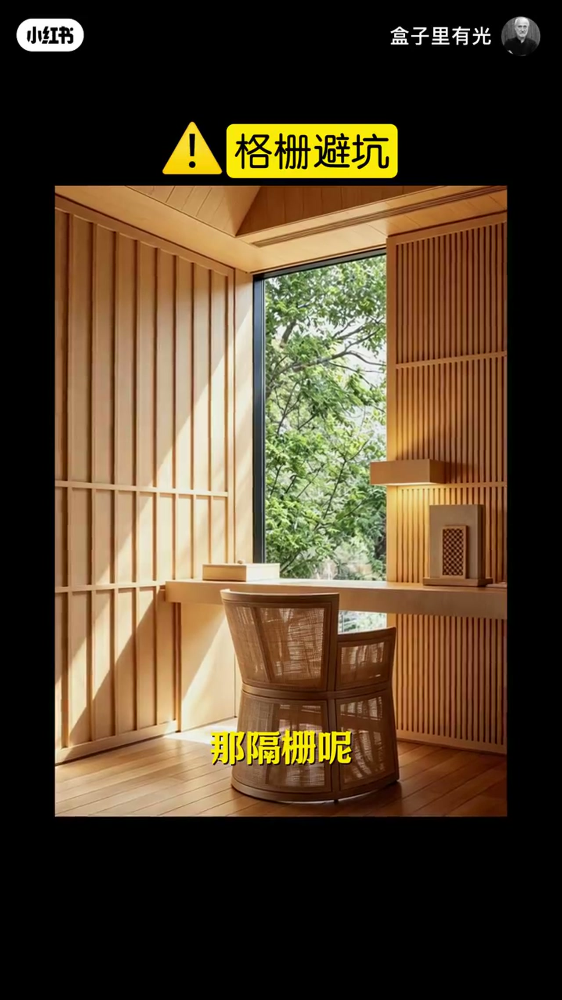

内容要点
同一作者继续用桌面模型讲「墙不生硬」：先加布面屏风弱化墙体硬度，再打底光做成「大版台灯」；不想要屏风时，改用凹凸格栅做出由亮到暗的光影与纵向拉伸。两条方案都有避坑——背光别太大太亮，格栅别满墙堆细节。
知识结构
柔软布面弱化墙壁生硬；背后打光像放大台灯，房间变柔软松弛，并形成前后层次与视觉中心。
透光范围不要太大太亮，否则廉价；弱化亮度、留朦胧，才显高级。不想要屏风可改做墙面细节。
凹凸格栅带来由亮到暗的光影与纵向拉高；不满墙，只在光线好处保留，做出疏密繁简。
墙面去生硬有两条可执行路径：布面屏风（材质软化 + 背光氛围 + 层次中心），或格栅细节（凹凸光影 + 竖线拉高）。共性是控制剂量——光别抢、格栅别满墙。
00:00-00:21布面屏风：软化墙面，并做出层次与中心
开场指着呆板拥堵的墙面，提出第一解法：加一个布面屏风。00:03 黄框「布面屏风」红箭头钉在织物网格上，字幕「加一个布面的屏风」——柔软布面直接弱化墙壁的生硬感。
背后再打灯光，屏风就像「被放大的台灯」。00:12 同屏风底部暖光亮起，黄字「房间都变得柔软松弛」，右下角嵌套台灯特写并标「大版台灯」。接着补结构功能：呆板墙缺少层次与视觉中心，屏风一立，前后关系与焦点同时出现。


00:21-00:40背光边界：朦胧高级，太亮显廉价
底部背光能加柔和氛围，但透光范围「不要太大和太亮」。太抢眼会显得廉价；应弱化亮度，让屏风与周围物品保持和谐，「有点朦胧的效果才能显高级」。
若不想要屏风，作者给出替代路径：增加墙面细节——为下一段格栅方案铺垫。
00:40-01:14格栅：光影起伏与纵向拉伸；不满墙
平整墙呆板时，加上凹凸的格栅效果，就能感受到由亮到暗的光影变化（ASR 写成「隔山／油亮」，按 00:44 字幕「格栅效果」与折纸演示校正）。整面木板墙若平淡，加入格栅可丰富光影；纵向线条还能拉伸房间高度，弱化呆板。
避坑很明确：格栅不要满墙都做，细节太多易视觉疲劳；只在光线好的位置保留，光影更丰富，也更有疏有密、有繁有简的舒适感。01:02 实景书房右侧竖向木格栅配壁灯，黄框「格栅避坑」把剂量控制说成可检查项。


完整转录（11段）
以下文本由 Whisper medium 模型自动转录，可能存在少量识别误差，已尽可能修正。
你看啊,这个墙面感觉呆板拥堵,加一个布面的屏风,柔软的布面就弱化了墙壁的生硬感
背后再打上灯光,屏风就像一面被放大的台灯,整个房间都变得柔软松弛
一面呆板的墙缺少层次感,没有视觉中心,加一个屏风就有了前后的层次关系和视觉中心
底部的背光为房间添加了柔和的氛围感,那透光的范围呢不要太大和太亮
如果太抢眼就会显得很廉价,弱化亮度让屏风跟周围的物品保持和谐的关系
有点朦胧的效果才能显高级,如果你不想要屏风还可以增加墙面的细节
一面平整的墙就感觉很呆板,当我们把这个墙加上凹凸的隔山效果,你再看就能感受到油亮到暗的光影变化
那有了光影的变化就降低了呆板的感受,整面的木板墙呆板平淡,加入隔山
丰富了光影变化,纵向的线条还拉伸了房间的高度,就弱化了呆板的效果
那隔山呢不要满墙都做,细节太多就容易视觉疲劳,只在光线好的位置保留隔山
光影效果会更丰富,还能给人有疏有密,有繁有减的舒适感